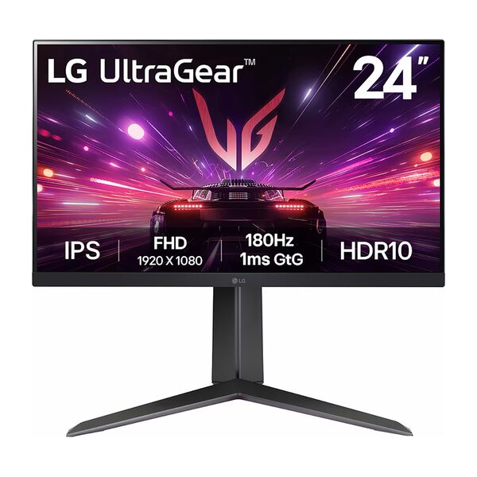
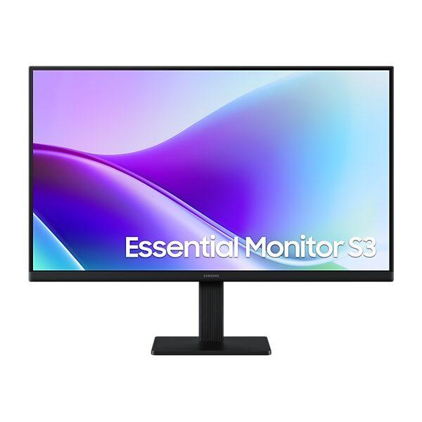
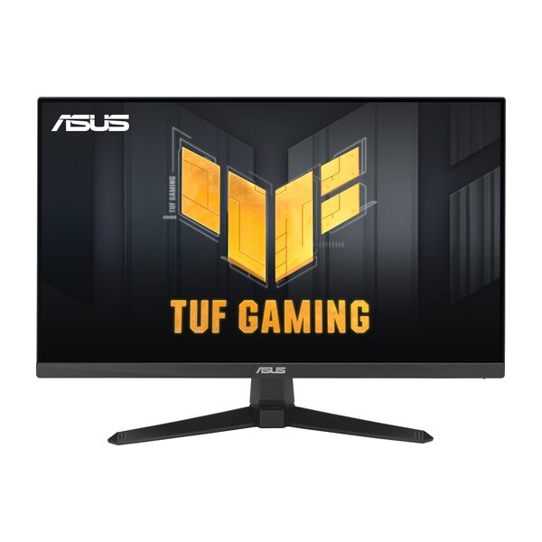
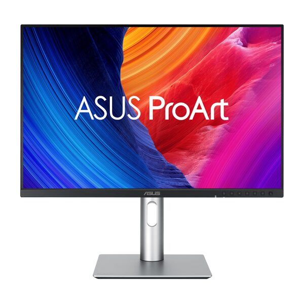
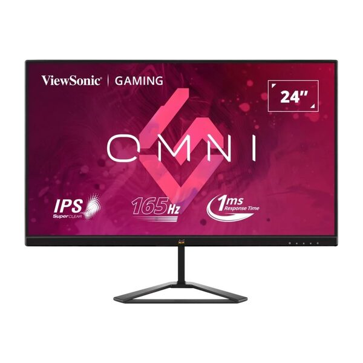
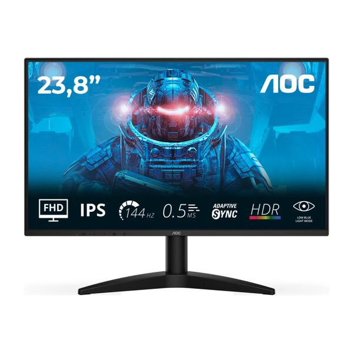
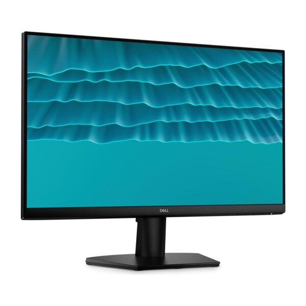

-
 5Đã bán 639
So sánh
5Đã bán 639
So sánh
-
 5Đã bán 355
So sánh
5Đã bán 355
So sánh
-
 5Đã bán 28
So sánh
5Đã bán 28
So sánh
-
 5Đã bán 33
So sánh
5Đã bán 33
So sánh
-

LG UltraGear 24GS65F-B Hàng sắp về -

Samsung Essential S3 S32GF LS24F320GAEXXV Hàng sắp về -

Asus TUF Gaming VG249QE5A Hàng sắp về -

Asus ProArt PA248QFV Hàng sắp về -

ViewSonic VX2479-HD-PRO Hàng sắp về -

AOC 24B36X Hàng sắp về -

Dell SE2426H Hàng sắp về
Thông tin dòng sản phẩm
Màn hình 24 inch là kích thước bán chạy nhất trong phân khúc màn hình máy tính hiện nay với không gian hiển thị đủ dùng, kích thước vừa vặn với hầu hết bàn làm việc, và mức giá nằm trong tầm tay từ sinh viên đến nhân viên văn phòng. Thế Giới Di Động phân phối màn hình 24 inch từ các thương hiệu lớn như Samsung, Asus, MSI, Dell, Philips, Viewsonic... ở nhiều phân khúc để bạn lựa chọn theo nhu cầu thực tế.
Màn hình máy tính 24 inch là gì
Màn hình 24 inch là màn hình máy tính có kích thước đường chéo tấm nền khoảng 61cm. Cần lưu ý: con số 24 inch này đo phần hiển thị hình ảnh, không tính phần viền nhựa xung quanh hay chân đế, nên kích thước tổng thể thực tế thường lớn hơn từ 2-4cm tùy hãng.
Ở kích thước này, Full HD (1920 × 1080 pixel) là độ phân giải phù hợp nhất. Hãy hình dung thế này: 1920 × 1080 pixel trải đều trên 24 inch tạo ra mật độ điểm ảnh khoảng 92 điểm mỗi inch, đủ để văn bản hiển thị sắc bén và ảnh trông mịn khi ngồi ở khoảng cách tiêu chuẩn 60-70cm. Nếu tăng kích thước lên 27 inch mà vẫn dùng Full HD, mật độ điểm ảnh giảm xuống còn khoảng 82 và hình ảnh bắt đầu có dấu hiệu mờ nhạt khi nhìn gần.
So sánh nhanh với các kích thước phổ biến:

Màn hình 24 inch: Cân bằng hoàn hảo cho mọi nhu cầu.
- Dưới 22 inch: nhỏ gọn, giá rẻ, nhưng không gian hiển thị hạn chế, thường dùng làm màn phụ
- 24 inch: cân bằng giữa kích thước, độ sắc nét và chi phí
- 27 inch trở lên: không gian rộng hơn nhưng cần lên 2K hoặc 4K để giữ ảnh đủ nét, đồng nghĩa ngân sách cao hơn đáng kể
Tại sao nên dùng màn hình máy tính 24 inch
Kích thước chuẩn cho Full HD
Màn hình Full HD (1920 × 1080) hiển thị sắc nét nhất ở 24 inch. Khi tăng lên màn hình 27 inch với cùng độ phân giải, các điểm ảnh bị kéo giãn và văn bản bắt đầu có cảm giác mờ hơn khi nhìn gần. Bạn cũng không cần card đồ họa mạnh để duy trì chất lượng hiển thị và số khung hình cao ở Full HD.

So sánh độ nét màn hình Full HD 24 inch và 27 inch
Vừa vặn với hầu hết bàn làm việc
Chiều rộng thực tế của màn 24 inch khoảng 53-56cm, đặt gọn trên hầu hết các bàn làm việc từ phòng trọ sinh viên đến văn phòng công ty. Bạn không cần phải sắp xếp lại bàn hay mua bàn mới chỉ để chứa màn hình.

Màn hình 24 inch vừa vặn mọi bàn làm việc
Khoảng cách ngồi đúng tư thế, tốt cho cổ và lưng
Màn 24 inch phù hợp với khoảng cách ngồi 60-70cm, đúng bằng độ sâu tiêu chuẩn của hầu hết bàn làm việc. Khi ngồi đúng tư thế, tầm mắt bao quát toàn màn hình mà không cần xoay đầu hay căng cổ. Với màn 27 inch, bạn cần ngồi lùi thêm hoặc phải xoay đầu để quan sát rìa màn hình.

Tư thế ngồi làm việc đúng với màn hình 24 inch và 27 inch
Dải giá rộng, nhiều lựa chọn theo ngân sách
Phân khúc 24 inch có dải giá rộng nhất trong các kích thước màn hình, từ khoảng 1.5 triệu đến trên 10 triệu. Cùng là màn 24 inch nhưng bạn có thể chọn tấm nền, tần số quét, thương hiệu và các tính năng phụ khác nhau tùy theo ngân sách thực tế.

Màn hình 24 inch: Dải giá rộng, nhiều lựa chọn tại Thegioididong.
Lý tưởng cho game thủ eSports và FPS
24 inch là kích thước được cộng đồng thi đấu game chuyên nghiệp ưa chuộng, đặc biệt cho các thể loại bắn súng như VALORANT, CS2, hay game eSports như Liên Minh Huyền Thoại. Ở kích thước này, tầm mắt bao quát toàn màn hình mà không cần dịch chuyển, giúp phản ứng nhanh hơn với địch xuất hiện ở rìa màn hình. Màn to hơn mang lại tầm quan sát rộng hơn nhưng cũng đòi hỏi đầu phải xoay nhiều hơn.

Màn hình 24 inch tối ưu cho game thủ FPS
Dễ thiết lập hệ thống hai màn hình
Hai màn 24 inch làm màn hình phụ đặt cạnh nhau chiếm khoảng 108-112cm chiều rộng bàn, vừa đủ cho bàn làm việc 120cm phổ biến. So với một màn siêu rộng 34 inch, hai màn 24 inch cho phép xử lý hai tác vụ hoàn toàn độc lập (ví dụ: một màn cho trang tính, một màn cho tài liệu tham khảo) với chi phí thấp hơn nhiều.

Các cách thiết lập hai màn hình hiệu quả
Tiêu thụ điện năng thấp
Màn 24 inch thường tiêu thụ từ 20-30W, thấp hơn so với màn 27 inch (25-40W) hay 32 inch (35-60W). Với người dùng để màn hình bật 8-10 giờ mỗi ngày, sự chênh lệch này tích lũy thành một khoản tiền điện đáng kể trong cả năm.

Tiết kiệm điện năng với màn hình 24 inch
Nhẹ, dễ di chuyển và lắp đặt
Trọng lượng trung bình của màn 24 inch từ 2.5-4kg kể cả chân đế, đủ nhẹ để tự mang theo khi chuyển chỗ làm, dọn phòng hoặc lắp đặt tại nhà mà không cần người phụ. Chính vì thế, với diện tích bàn làm việc không quá rộng rãi, màn hình 24 inch là lựa chọn phù hợp để cân bằng giữa không gian làm việc và trải nghiệm sử dụng màn hình.

Lắp đặt màn hình 24 inch tại nhà dễ dàng, tiện lợi.
Tương thích cao với hầu hết máy tính
Hầu hết PC để bàn và máy tính laptop hiện nay đều xuất hình được qua HDMI hoặc DisplayPort, hai chuẩn kết nối phổ biến trên màn 24 inch. Bạn không cần mua thêm hub hay thiết bị chuyển đổi đặc biệt chỉ để kết nối.

Màn hình kết nối tiện lợi: Cắm là dùng, không cần Hub.
Bảo vệ mắt khi làm việc dài giờ
Màn hình 24 inch hiện nay đều tích hợp Flicker-Free (chống nhấp nháy đèn nền) và Low Blue Light (giảm ánh sáng xanh). Hai tính năng này giúp giảm mỏi mắt và khô mắt khi nhìn màn hình liên tục nhiều giờ, quan trọng nhất với học sinh, sinh viên và nhân viên văn phòng dùng máy tính cả ngày.

Màn hình bảo vệ mắt Flicker-Free và Low Blue Light khi làm việc dài giờ
Tiêu chí chọn mua màn hình máy tính 24 inch chuẩn
Tấm nền IPS hay VA
Tấm nền quyết định chất lượng màu sắc và góc nhìn của màn hình. Ở phân khúc 24 inch có ba loại phổ biến nhất cần biết:

So sánh chi tiết tấm nền màn hình IPS, VA và Fast IPS
- Tấm nền IPS: cho góc nhìn rộng đến 178°, màu sắc không bị thay đổi kể cả khi bạn nhìn nghiêng, phù hợp cho văn phòng và thiết kế đồ họa. Nhược điểm là màu đen không thực sự sâu, vì đèn nền vẫn le lói qua ngay cả khi màn đang hiển thị màu đen.
- Tấm nền VA: có màu đen sâu hơn và độ tương phản cao hơn nhiều so với IPS, tạo cảm giác hình ảnh có chiều sâu như xem trên TV, phù hợp cho giải trí và xem phim. Nhược điểm là góc nhìn hẹp hơn, màu sắc thay đổi khi nhìn từ cạnh.
- Tấm nền Fast IPS: là phiên bản cải tiến của IPS, xử lý được điểm yếu về tốc độ chuyển màu, phù hợp cho cả làm việc lẫn chơi game. Nếu ngân sách cho phép, Fast IPS là lựa chọn cân bằng nhất cho người vừa làm việc văn phòng vừa chơi game.
Tần số quét bao nhiêu Hz là đủ
Tần số quét (Hz) là số lần màn hình cập nhật hình ảnh trong một giây. Hãy hình dung như tốc độ lật trang của một cuốn phim hoạt hình: lật càng nhanh, chuyển động trông càng mượt mà.
60-75Hz đủ cho công việc văn phòng, lướt web và xem phim thông thường. Nếu bạn không chơi game hoặc chỉ chơi game nhẹ, tần số này hoàn toàn đáp ứng được. Bước lên 100-144Hz, bạn sẽ cảm nhận sự khác biệt rõ ràng ngay cả khi không chơi game, cuộn trang, kéo cửa sổ, di chuyển chuột đều trông mượt hơn hẳn. Đây là mức đáng chọn cho người dùng thông thường có ngân sách từ 3 triệu trở lên.
Còn 165Hz trở lên thực sự dành cho game thủ nghiêm túc, đặc biệt với các game bắn súng cạnh tranh, nhưng máy tính của bạn cũng cần đủ mạnh để đẩy được số khung hình tương ứng.

Màn hình tần số quét cao mang đến trải nghiệm mượt mà
Thời gian phản hồi ảnh hưởng thế nào
Thời gian phản hồi là tốc độ một điểm ảnh đổi từ màu này sang màu khác. Thời gian phản hồi càng thấp, hình ảnh chuyển động càng ít bị nhòe khi vật thể di chuyển nhanh, giống kiểu bạn chụp ảnh bằng điện thoại và thấy ảnh bị "bóng" theo chuyển động.
Với công việc văn phòng, 5ms là hoàn toàn đủ và bạn không cần quan tâm thêm. Với gaming, nên chọn 1-2ms để hạn chế hiện tượng nhòe ảnh trong các pha hành động nhanh. Lưu ý nhỏ: có hai cách đo thời gian phản hồi là GTG và MPRT, số MPRT thường nhỏ hơn GTG do cách đo khác, khi so sánh hai màn, hãy đối chiếu cùng một phương pháp đo cho chính xác.

Thời gian phản hồi 1ms - 5ms: Chuyển động nhanh, mượt mà
Cổng kết nối nào phù hợp với máy bạn
Kiểm tra cổng xuất hình trên PC hoặc laptop của bạn trước khi mua màn hình 24 inch, đây là bước nhiều người hay bỏ qua rồi về mới phát hiện không cắm được.
HDMI 1.4 truyền được Full HD ở 144Hz, phù hợp với phần lớn máy tính phổ thông. HDMI 2.0 hỗ trợ Full HD lên đến 240Hz hoặc 4K 60Hz, thường thấy trên laptop đời 2020 trở lại đây. DisplayPort 1.2 và 1.4 là chuẩn phù hợp cho gaming tốc độ cao, thường cho kết quả ổn định hơn HDMI ở tần số cao. USB-C tiện lợi với laptop đời mới, một cáp vừa truyền hình vừa sạc máy mà không cần cắm thêm dây.
Để không bị thiếu cổng sau này, ưu tiên màn có ít nhất một HDMI và một DisplayPort. Nếu bạn dùng laptop mới hỗ trợ USB-C xuất hình, chọn màn có thêm cổng này sẽ tiện hơn nhiều.

Chọn đúng cổng kết nối màn hình để trải nghiệm trọn vẹn
Công nghệ bảo vệ mắt
Hai tính năng quan trọng nhất khi dùng màn hình nhiều giờ là Flicker-Free và Low Blue Light. Flicker-Free chống nhấp nháy đèn nền, ngay cả khi mắt người không nhận ra sự nhấp nháy, não vẫn ghi nhận và gây mỏi mắt tích lũy sau nhiều giờ làm việc. Low Blue Light giảm ánh sáng xanh, loại ánh sáng ảnh hưởng đến chất lượng giấc ngủ nếu bạn dùng màn hình vào buổi tối. Nhiều hãng có chứng nhận TÜV Rheinland độc lập cho các tính năng này, là dấu hiệu tốt để nhận biết.
Cả hai tính năng này xuất hiện trên hầu hết màn 24 inch từ 2 triệu trở lên, nên gần như không có lý do gì để bỏ qua khi chọn mua.

Màn hình với công nghệ bảo vệ mắt toàn diện
Khả năng điều chỉnh tư thế ngồi
Nếu bạn dùng máy tính nhiều giờ mỗi ngày, đây là tính năng thường bị bỏ qua nhưng lại ảnh hưởng trực tiếp đến sức khỏe về lâu dài. Điều chỉnh được độ cao cho phép đặt màn hình ngang tầm mắt thay vì phải cúi cổ, quan trọng nhất cho người dùng văn phòng dài giờ. Xoay dọc 90° rất hữu ích cho lập trình viên và người đọc tài liệu dài, vì màn hình dọc hiển thị được nhiều dòng hơn.
Lỗ gắn giá đỡ VESA ở mặt sau màn hình (thường là 75×75mm hoặc 100×100mm) cho phép gắn arm màn hình, giải phóng toàn bộ diện tích mặt bàn phía dưới và điều chỉnh vị trí linh hoạt hơn nhiều.
Điều chỉnh độ nghiêng là tính năng cơ bản nhất, xuất hiện trên hầu hết màn từ 2 triệu trở lên. Điều chỉnh độ cao và xoay 90° thường có từ phân khúc 3-4 triệu.

Tư thế chuẩn làm việc thoải mái với màn hình linh hoạt
Màn hình máy tính 24 inch hãng nào tốt nhất
Bảng đặc điểm các hãng màn hình tại Thế Giới Di Động
| Hãng | Điểm mạnh với 24 inch | Phân khúc giá | Phù hợp với |
|---|---|---|---|
| Samsung | Thiết kế viền mỏng, màu sắc IPS trung thực | 2–5 triệu | Văn phòng, sinh viên |
| Asus | Đa dạng dòng sản phẩm, Eye Care tốt | 2–7 triệu | Mọi nhu cầu |
| MSI | Thông số tốt ở cùng mức giá | 2.5–5 triệu | Gaming nhẹ, văn phòng |
| Dell | Bền bỉ, thiết kế chuyên nghiệp | 3–6 triệu | Văn phòng doanh nghiệp |
| Viewsonic | Giá tốt nhất phân khúc phổ thông | 1.5–3 triệu | Sinh viên, dùng cơ bản |
| Philips | Fast IPS + tần số quét cao, giá cạnh tranh | 2.5–5 triệu | Văn phòng + gaming nhẹ |
Lưu ý: Mức giá chỉ dùng để tham khảo và có thể thay đổi tùy theo thời điểm
Samsung cân bằng thiết kế và chất lượng hình ảnh
Màn hình máy tính Samsung là thương hiệu quen thuộc với người dùng Việt Nam, với dải sản phẩm màn hình 24 inch từ phân khúc văn phòng đến chuyên dụng. Màn Samsung 24 inch thường có thiết kế viền mỏng gọn gàng, tấm nền IPS cho màu sắc trung thực và công nghệ Eye Saver Mode giảm ánh sáng xanh. Phù hợp cho người dùng văn phòng và sinh viên cần màn hình tin cậy từ thương hiệu đã quen.

Màn hình Samsung Essential S3: Thiết kế tinh tế, hình ảnh sắc nét
Asus đa dạng nhất về phân khúc
Màn hình Asus có dải sản phẩm màn hình 24 inch rộng nhất trong các hãng có mặt tại TGDĐ, từ dòng phổ thông (VY, VZ) đến văn phòng chuyên nghiệp (ProArt) và gaming (TUF Gaming). ASUS Eye Care tích hợp sẵn trên mọi sản phẩm. Dòng ProArt PA249CGV được nhà thiết kế đồ họa ưa chuộng nhờ khả năng hiệu chỉnh màu chính xác, còn dòng TUF Gaming phù hợp cho game thủ muốn tần số quét cao ở ngân sách hợp lý.

Màn hình ASUS đa dạng, đáp ứng mọi nhu cầu người dùng
MSI thông số tốt ở cùng mức giá
Màn hình máy tính MSI có hai phân khúc rõ ràng ở 24 inch: dòng PRO cho văn phòng với thiết kế gọn gàng và tần số quét 100-144Hz, dòng MAG/G cho gaming với tần số quét cao và thời gian phản hồi nhanh. MSI thường cung cấp thông số kỹ thuật tốt hơn ở cùng mức giá so với nhiều đối thủ, phù hợp cho người dùng coi trọng hiệu năng thực tế hơn thương hiệu.

Màn hình MSI: Thông số vượt trội cho trải nghiệm đỉnh cao
Dell chuẩn mực văn phòng doanh nghiệp
Màn hình Dell được các doanh nghiệp tin dùng nhờ độ bền cao và thiết kế chuyên nghiệp không quá phô trương. Màn hình Dell 24 inch thường có viền mỏng phù hợp cho thiết lập hai màn hình đặt cạnh nhau, chất lượng màu sắc IPS ổn định theo thời gian. Không phải lựa chọn hàng đầu về tần số quét, nhưng phù hợp cho môi trường văn phòng yêu cầu màu sắc nhất quán.

Màn hình Dell 24 inch chuẩn mực văn phòng doanh nghiệp.
Viewsonic giá trị tốt nhất ở phân khúc phổ thông
Màn hình Viewsonic là thương hiệu chuyên về màn hình, ít được nhắc đến rộng rãi nhưng cung cấp chất lượng tốt ở phân khúc dưới 3 triệu. Màn hình Viewsonic VA2432-H-2 là một trong những sản phẩm bán chạy nhất tại TGDĐ, phù hợp cho sinh viên và người dùng văn phòng cơ bản không cần tần số quét cao.

Màn hình ViewSonic 24 inch giá trị tốt nhất phân khúc phổ thông
Philips chú trọng bảo vệ mắt và gaming tầm trung
Màn hình Philips nổi bật ở phân khúc gaming tầm trung với dòng Evnia, cung cấp tấm nền Fast IPS và tần số quét 144Hz ở mức giá cạnh tranh. Công nghệ LowBlue Mode và Flicker-Free của Philips được đánh giá tốt cho người dùng phải nhìn màn hình nhiều giờ liên tục.

Màn hình Philips gaming bảo vệ mắt 144Hz
Các phân khúc màn hình máy tính 24 inch trên thị trường
Phổ thông (dưới 3 triệu)
Ở mức này bạn có tấm nền IPS hoặc VA, Full HD, tần số quét 60-100Hz và các cổng kết nối cơ bản. Phù hợp cho học sinh, sinh viên hoặc nhân viên văn phòng không có yêu cầu đặc biệt về tốc độ hay màu sắc.

Màn hình cơ bản cho học sinh, sinh viên và nhân viên văn phòng
Tầm trung (3–5 triệu)
Bước lên tầm này, màn hình có tần số quét 100-144Hz, thời gian phản hồi nhanh hơn và chân đế cho phép điều chỉnh độ cao, xoay 90°. Đây là phân khúc cân bằng nhất, phù hợp cho người dùng văn phòng nhiều giờ và game thủ bình thường.

Màn hình tầm trung 3-5 triệu cho công việc và giải trí
Cao cấp (5–10 triệu)
Phân khúc này mang lại tấm nền Fast IPS hoặc IPS chuyên dụng, tần số quét từ 144-180Hz, thời gian phản hồi 1ms và độ phủ màu cao, thường đạt 95-100% màu sắc chuẩn điện ảnh. Phù hợp cho nhà thiết kế đồ họa, người chỉnh ảnh chuyên nghiệp và game thủ nghiêm túc.

Màn hình cho sáng tạo chuyên nghiệp và trải nghiệm gaming đỉnh cao.
Chuyên nghiệp (trên 10 triệu)
Màn hình đồ họa với khả năng hiệu chỉnh màu bằng phần cứng, độ phủ màu rộng đạt chuẩn in ấn và điện ảnh, hoặc màn gaming tần số quét 180Hz+ với tấm nền OLED. Dành cho nhà thiết kế và nhiếp ảnh gia chuyên nghiệp, hoặc game thủ thi đấu cần mọi lợi thế.
Vì sao nên mua màn hình 24 inch tại Thế Giới Di Động
- Đa dạng sản phẩm từ nhiều thương hiệu uy tín: Thế Giới Di Động phân phối màn hình 24 inch từ hơn 10 thương hiệu lớn gồm Samsung, Asus, MSI, Dell, Viewsonic, Philips, GIGABYTE, Acer, Lenovo và Xiaomi. Từ màn văn phòng giá phổ thông đến màn đồ họa và màn hình gaming chuyên dụng, bạn có thể so sánh trực tiếp tại cửa hàng hoặc lọc theo nhu cầu trên website.
- Bảo hành chính hãng, đổi trả 1 năm: Tất cả màn hình tại Thế Giới Di Động được bảo hành chính hãng theo quy định nhà sản xuất, kèm chính sách đổi trả linh hoạt trong vòng 1 năm. Bạn không phải lo lắng khi gặp sự cố kỹ thuật trong thời gian đầu sử dụng.
- Hỗ trợ trả góp 0%, thanh toán linh hoạt: Khách hàng có thể mua laptop trả góp 0% qua thẻ tín dụng và các công ty tài chính đối tác. Với màn tầm 3-5 triệu, bạn có thể chia thành các kỳ thanh toán nhỏ mà không phát sinh chi phí phụ.
- Hơn 2.900 siêu thị trên toàn quốc: Với mạng lưới hơn 2.900 siêu thị, bạn có thể mua trực tiếp tại cửa hàng gần nhất hoặc đặt hàng online và nhận hàng trong ngày tại hầu hết tỉnh thành.
Câu hỏi thường gặp khi chọn mua màn hình máy tính 24 inch
Màn hình 24 inch phù hợp với những ai?
Màn hình 24 inch phù hợp với hầu hết người dùng phổ thông: học sinh, sinh viên dùng để học tập và giải trí; nhân viên văn phòng làm việc với tài liệu, bảng tính và họp online; game thủ eSports và FPS cần phản ứng nhanh với giá hợp lý. Đây không phải lựa chọn tốt nhất nếu bạn cần không gian rộng cho đồ họa 3D hoặc dựng phim chuyên nghiệp, lúc đó nên xem xét màn hình 27 inch với độ phân giải 2K trở lên.
Màn hình 24 inch nên dùng độ phân giải gì?
Full HD (1920 × 1080) là độ phân giải phù hợp nhất cho 24 inch, với mật độ điểm ảnh khoảng 92 điểm mỗi inch, đủ để hình ảnh và văn bản hiển thị sắc nét ở khoảng cách ngồi tiêu chuẩn. Nếu chọn 2K (2560 × 1440) trên 24 inch, hình ảnh sẽ sắc nét hơn nhưng giao diện hệ thống trở nên nhỏ hơn, và bạn cần card đồ họa mạnh hơn để duy trì số khung hình cao trong game, không phải sự đánh đổi có lợi cho phần lớn người dùng phổ thông.
Nên mua màn hình 24 inch hay 27 inch?
Chọn 24 inch nếu bàn làm việc dưới 100cm, ngân sách dưới 5 triệu, hoặc bạn chơi game FPS cạnh tranh cần bao quát toàn màn hình nhanh. Chọn 27 inch nếu cần không gian rộng hơn để thiết kế đồ họa, xem phim hay làm việc đa nhiệm với nhiều cửa sổ, nhưng khi đó phải chọn 2K thay vì Full HD để tránh hình ảnh bị mờ khi nhìn gần.
Tần số quét bao nhiêu Hz là đủ cho màn hình 24 inch?
Phụ thuộc vào mục đích sử dụng: 75Hz đủ cho văn phòng và xem phim; 100-144Hz phù hợp cho người vừa làm việc vừa chơi game thông thường; 165Hz trở lên dành cho game thủ nghiêm túc cần mọi lợi thế cạnh tranh. Cần lưu ý thêm: để tận dụng màn 144Hz trong game, PC của bạn cũng cần đẩy được ít nhất 144 khung hình mỗi giây ổn định, nếu máy không đủ mạnh, mua màn 144Hz cũng không mang lại khác biệt.
Tấm nền IPS hay VA tốt hơn cho màn hình 24 inch?
IPS tốt hơn nếu bạn làm việc văn phòng, thiết kế, hoặc nhiều người cùng nhìn màn hình từ các góc khác nhau. VA tốt hơn nếu bạn ưu tiên xem phim và giải trí, cần màu đen sâu và hình ảnh có chiều sâu. Với gaming kết hợp làm việc, Fast IPS là lựa chọn cân bằng tốt nhất vì giữ được màu sắc chuẩn của IPS trong khi tốc độ chuyển màu nhanh hơn nhiều so với IPS thông thường.
Khoảng cách ngồi tối ưu với màn hình 24 inch là bao nhiêu?
Khoảng cách lý tưởng là từ 60-70cm. Ở khoảng cách này, mắt bao quát toàn màn hình mà không cần xoay đầu và không quá gần gây căng thẳng thị giác. Hầu hết bàn làm việc tiêu chuẩn có độ sâu 60-80cm, nên đặt màn 24 inch sát tường vẫn đảm bảo khoảng cách phù hợp.
Màn hình 24 inch có gắn được giá đỡ arm không?
Hầu hết màn hình 24 inch hiện nay đều có lỗ VESA 75×75mm hoặc 100×100mm ở mặt sau để gắn arm. Khi dùng arm, bạn điều chỉnh chiều cao, góc nghiêng và hướng màn hình linh hoạt hơn nhiều so với chân đế cố định, đồng thời giải phóng toàn bộ diện tích mặt bàn phía dưới. Kiểm tra thông số VESA trong phần mô tả sản phẩm trước khi mua arm để đảm bảo tương thích.